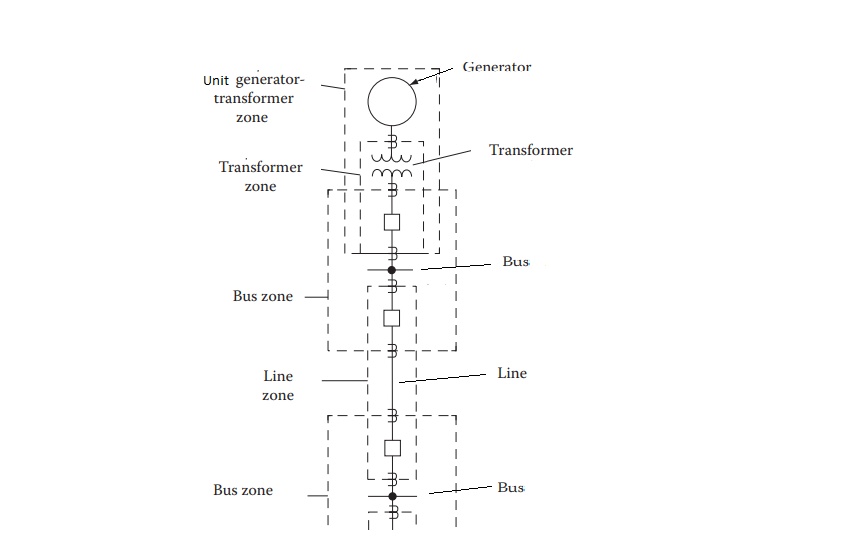

-
Protection Zones In Power System
2026-09-12
Protection zone is defined as the part of the power system which is protected by a certain protective scheme. Each area or zone are assigned to there specific equipment or part of the power system to provide the primary protection (the assigned area for which the relay is primary responsible for the protection) for that zone, here is the different relay primary protection zones :
• Generators and generator-transformer units.
• Transformers.
• Buses.
• Lines (transmission, subtransmission, and distribution).
• Motors and utilization equipment.
• Capacitor or reactor banks.
Overlapping Zone of Power System
The protection in each zone should overlap that in the adjacent zone; otherwise, a primary protection void would occur between the protection zones.
This overlap is accomplished by the location of the current transformer CTs and circuit breaker CBs.The Need For Backup
Whenever primary protection zone malfunction for whatever reason and the protection system does not able to isolate the fault, severe damage will occur and consequent equipment damage . A duplicate sit of relays and CTs and associated trip circuit are installed to provide backup , a common locations for backup relay systems are :
1. primary backup (Same location).
2. local backup (Same station).
3. remote backup (Various remote stations).
-
The Reliability Of The Protection System
The primary objective of the protection system is to maintain a high level of continue of... -
Relay Device Numbers and Functions
The functions of various relays and equipment are identified by the ANSI/IEEE standardized... -
A List of PSRC Standards and Guidance related to Power System Protection and Control
The IEEE Power System Relaying and Control Committee (PSRC) is one of the 17 technical... -
Symmetrical Components Calculator
this article explains the fundamental concepts related to the topic and discusses the key principles engineers should understand.
Related Posts
References
- Protection Relaying Principal and Applications by J. Lewis Blackburn and Thomas J. Domin